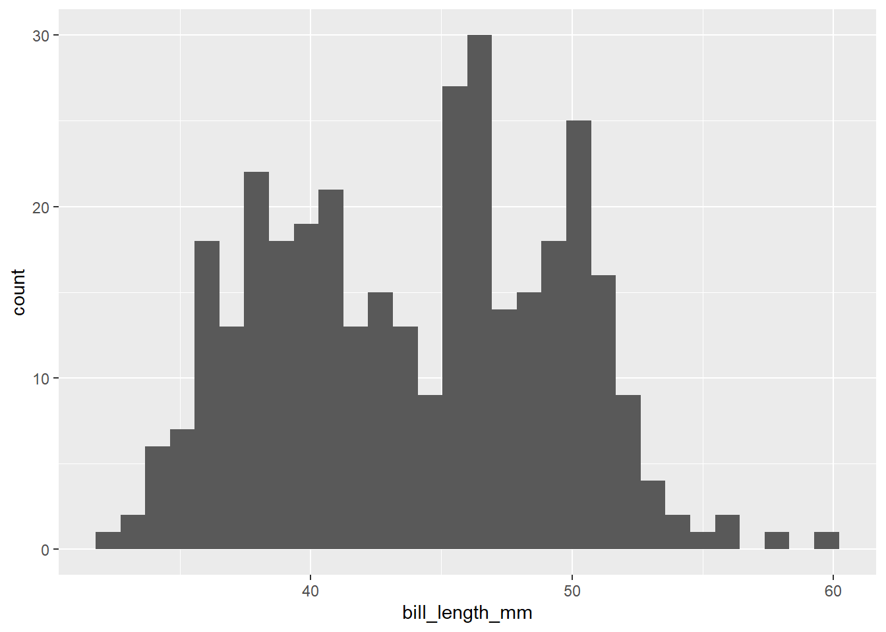
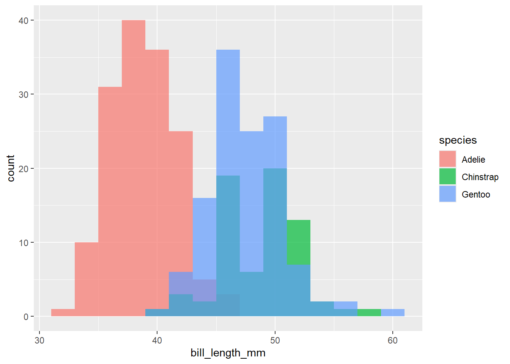
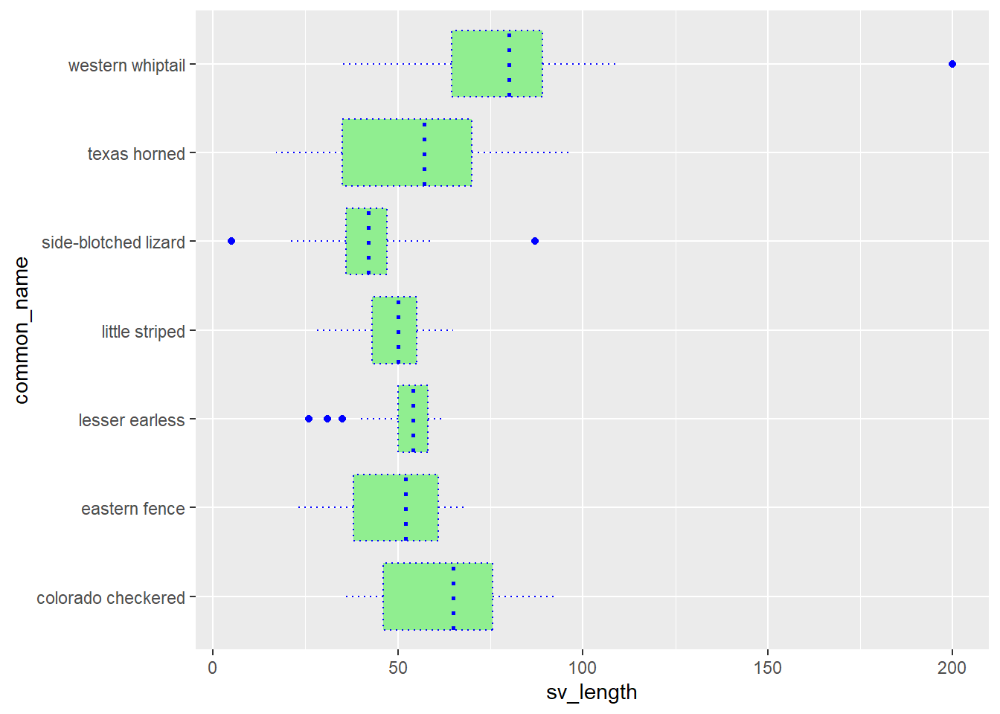
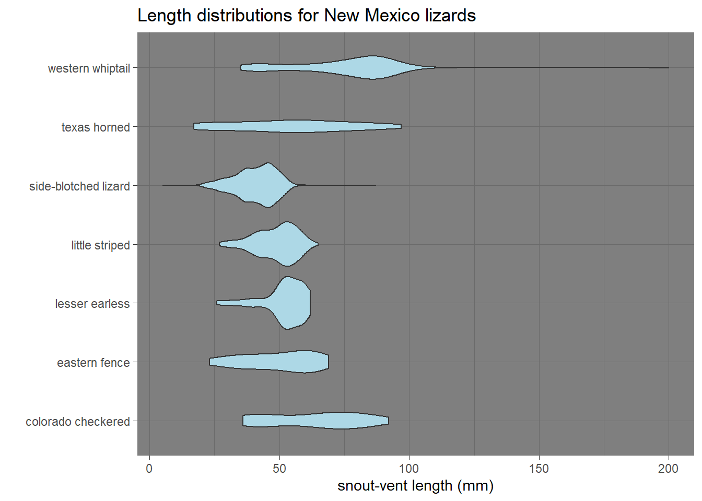
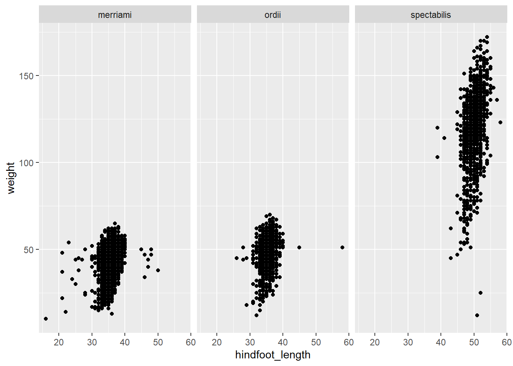
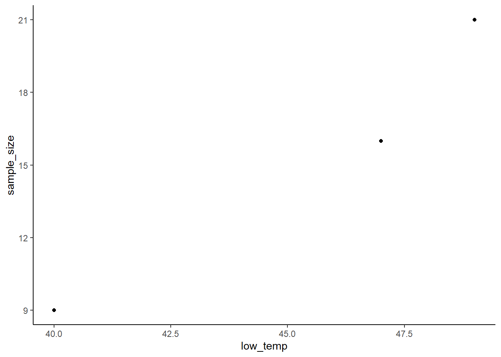

C Lab 3: Visualizing data in R (Part 1) (2025)
In this lab, we will get into one of the really fun parts of R programming – making figures!
By the end of this lab, you should be able to:
- load an R package using the
library()function, - install R packages as needed using
install.packages(), - use the
ggplot2package within thetidyverseto write simple code to plot data, - create boxplots, histograms, and scatterplots to compare the distributions of different subgroups of data.
C.0.1 Resources
This lab is loosely based on chapter 1 in the online textbook “R for Data Science” (second edition), which you can find online here: https://r4ds.hadley.nz/data-visualize
C.1 Part 1: Packages in R (covered in lecture, so only here for reference)
Many functions and data in R are not instantly available. Instead, they are available online as “packages”. Packages extend the usefulness of R with new functions and data (and documentation/metadata), and they are hosted online in a standard way for easy installation and loading.
C.1.1 Installing an R package
Installing an R package is easy to do within RStudio. In the computer labs we have already installed most R packages that you will need for any coding in WFC 70. However, when you are programming on your personal computer you will need to install any packages that need to be loaded for a particular lab or HW. You only need to install an R package once.
The code chunk below is only necessary if you are working on this lab at home, because these packages are already installed in the computer lab.
# the line below is commented so it won't run.
# if you need to install the packages, delete the hashtag then run
# the line below, but then turn it into a comment again
# before knitting
# install.packages(c("tidyverse", "palmerpenguins"))Delete or comment out any install.packages() commands before you knit. You cannot knit an Rmd that still has active install.packages() code.
C.1.2 Loading an R package
On the other hand, you must have code to load any relevant R packages inside of your Rmd if you go on to use functions/data from those packages in your Rmd.
Loading an R package tells R/RStudio that you plan to use that package during your current sessions. You need to load an R package in every session that you use it. After it is loaded, it will stay loaded until you close R/RStudio.
## Warning: package 'tidyverse' was built under R version 4.4.3## ── Attaching core tidyverse packages
## ✔ dplyr 1.1.4 ✔ readr 2.1.5
## ✔ forcats 1.0.0 ✔ stringr 1.5.1
## ✔ ggplot2 3.5.1 ✔ tibble 3.2.1
## ✔ lubridate 1.9.3 ✔ tidyr 1.3.1
## ✔ purrr 1.0.2
## ── Conflicts ────────────────────────
## ✖ dplyr::filter() masks stats::filter()
## ✖ lubridate::hms() masks vembedr::hms()
## ✖ dplyr::lag() masks stats::lag()
## ℹ Use the conflicted package (<http://conflicted.r-lib.org/>) to force all conflicts to become errorsIf you run this code and get the error message that there is no package called ‘tidyverse’, that means that the package is not installed, and you’ll need to use the earlier code to install it.
Assuming everything worked, in your output you’ll notice a somewhat odd message.
It says “Attaching core tidyverse packages” and then lists several cryptic
names. Unlike most packages, tidyverse is a suite of multiple R packages, but
you can load them all in one line to save time, because they are commonly used
together.
Today we are primarily using functions from the ggplot2 package, which was
loaded when we used the library(tidyverse) command in the code chunk above.
C.1.3 Part 1b (5 minutes, instructor leading)
We also need to load the package with the penguin data.
There is one odd thing about data sets that are included in R packages. You will notice that nothing new has shown up in the global environment. However, the data frames are actually loaded (but hidden).
## # A tibble: 344 × 8
## species island bill_length_mm bill_depth_mm flipper_length_mm body_mass_g
## <fct> <fct> <dbl> <dbl> <int> <int>
## 1 Adelie Torgersen 39.1 18.7 181 3750
## 2 Adelie Torgersen 39.5 17.4 186 3800
## 3 Adelie Torgersen 40.3 18 195 3250
## 4 Adelie Torgersen NA NA NA NA
## 5 Adelie Torgersen 36.7 19.3 193 3450
## 6 Adelie Torgersen 39.3 20.6 190 3650
## 7 Adelie Torgersen 38.9 17.8 181 3625
## 8 Adelie Torgersen 39.2 19.6 195 4675
## 9 Adelie Torgersen 34.1 18.1 193 3475
## 10 Adelie Torgersen 42 20.2 190 4250
## # ℹ 334 more rows
## # ℹ 2 more variables: sex <fct>, year <int>## # A tibble: 344 × 17
## studyName `Sample Number` Species Region Island Stage `Individual ID`
## <chr> <dbl> <chr> <chr> <chr> <chr> <chr>
## 1 PAL0708 1 Adelie Penguin… Anvers Torge… Adul… N1A1
## 2 PAL0708 2 Adelie Penguin… Anvers Torge… Adul… N1A2
## 3 PAL0708 3 Adelie Penguin… Anvers Torge… Adul… N2A1
## 4 PAL0708 4 Adelie Penguin… Anvers Torge… Adul… N2A2
## 5 PAL0708 5 Adelie Penguin… Anvers Torge… Adul… N3A1
## 6 PAL0708 6 Adelie Penguin… Anvers Torge… Adul… N3A2
## 7 PAL0708 7 Adelie Penguin… Anvers Torge… Adul… N4A1
## 8 PAL0708 8 Adelie Penguin… Anvers Torge… Adul… N4A2
## 9 PAL0708 9 Adelie Penguin… Anvers Torge… Adul… N5A1
## 10 PAL0708 10 Adelie Penguin… Anvers Torge… Adul… N5A2
## # ℹ 334 more rows
## # ℹ 10 more variables: `Clutch Completion` <chr>, `Date Egg` <date>,
## # `Culmen Length (mm)` <dbl>, `Culmen Depth (mm)` <dbl>,
## # `Flipper Length (mm)` <dbl>, `Body Mass (g)` <dbl>, Sex <chr>,
## # `Delta 15 N (o/oo)` <dbl>, `Delta 13 C (o/oo)` <dbl>, Comments <chr>I prefer to formally load the data into my environment, which you can do with
the data() function.
# the palmerpenguins package called their data "penguins"
# and the command will load both data frames
data(penguins)Now we can see the data frames in our environment. Let’s take a closer look.
# the glimpse() function lets you see the variable (columns) and
# a few observations for each variable (rows)
glimpse(penguins)## Rows: 344
## Columns: 8
## $ species <fct> Adelie, Adelie, Adelie, Adelie, Adelie, Adelie, Adel…
## $ island <fct> Torgersen, Torgersen, Torgersen, Torgersen, Torgerse…
## $ bill_length_mm <dbl> 39.1, 39.5, 40.3, NA, 36.7, 39.3, 38.9, 39.2, 34.1, …
## $ bill_depth_mm <dbl> 18.7, 17.4, 18.0, NA, 19.3, 20.6, 17.8, 19.6, 18.1, …
## $ flipper_length_mm <int> 181, 186, 195, NA, 193, 190, 181, 195, 193, 190, 186…
## $ body_mass_g <int> 3750, 3800, 3250, NA, 3450, 3650, 3625, 4675, 3475, …
## $ sex <fct> male, female, female, NA, female, male, female, male…
## $ year <int> 2007, 2007, 2007, 2007, 2007, 2007, 2007, 2007, 2007…## Rows: 344
## Columns: 17
## $ studyName <chr> "PAL0708", "PAL0708", "PAL0708", "PAL0708", "PAL…
## $ `Sample Number` <dbl> 1, 2, 3, 4, 5, 6, 7, 8, 9, 10, 11, 12, 13, 14, 1…
## $ Species <chr> "Adelie Penguin (Pygoscelis adeliae)", "Adelie P…
## $ Region <chr> "Anvers", "Anvers", "Anvers", "Anvers", "Anvers"…
## $ Island <chr> "Torgersen", "Torgersen", "Torgersen", "Torgerse…
## $ Stage <chr> "Adult, 1 Egg Stage", "Adult, 1 Egg Stage", "Adu…
## $ `Individual ID` <chr> "N1A1", "N1A2", "N2A1", "N2A2", "N3A1", "N3A2", …
## $ `Clutch Completion` <chr> "Yes", "Yes", "Yes", "Yes", "Yes", "Yes", "No", …
## $ `Date Egg` <date> 2007-11-11, 2007-11-11, 2007-11-16, 2007-11-16,…
## $ `Culmen Length (mm)` <dbl> 39.1, 39.5, 40.3, NA, 36.7, 39.3, 38.9, 39.2, 34…
## $ `Culmen Depth (mm)` <dbl> 18.7, 17.4, 18.0, NA, 19.3, 20.6, 17.8, 19.6, 18…
## $ `Flipper Length (mm)` <dbl> 181, 186, 195, NA, 193, 190, 181, 195, 193, 190,…
## $ `Body Mass (g)` <dbl> 3750, 3800, 3250, NA, 3450, 3650, 3625, 4675, 34…
## $ Sex <chr> "MALE", "FEMALE", "FEMALE", NA, "FEMALE", "MALE"…
## $ `Delta 15 N (o/oo)` <dbl> NA, 8.94956, 8.36821, NA, 8.76651, 8.66496, 9.18…
## $ `Delta 13 C (o/oo)` <dbl> NA, -24.69454, -25.33302, NA, -25.32426, -25.298…
## $ Comments <chr> "Not enough blood for isotopes.", NA, NA, "Adult…A few questions to orient ourselves to these data.
Which data frame has more variables, or are they the same?
Which data frame has more observations, or are they the same?
What is different about the column/variable names in
penguinsas compared topenguins_raw?
C.2 Part 2: Using ggplot() for plotting in R (15 minutes, self-led)
The core function in the ggplot2 package is called ggplot(). But making
plots using ggplot() is like making lasagna. You have to add layers until
you’ve produced the perfect result.
Recall from lecture that we need the base canvas with the data (and aesthetics),
as well as at least one additional geometry layer. We will see lots of types
of geom in this course. We’ll briefly begin with a critical type of plot,
the scatterplot. That shows two-dimensional points to illustrate the
relationship between the x- and y-axis. It has a geometry called geom_point().
## Warning: Removed 2 rows containing missing
## values or values outside the scale
## range (`geom_point()`).
Hooray, we have made our first ggplot! However, today we want to practice making histograms and boxplots. So we’ll need some slightly different aesthetics and geometries. We only started with scatterplots because they are so common, and they have a very clearly defined x- and y-axis.
Before we move on, there is one crucial thing to note: each time you add a
new layer (e.g. a geom, some labels for nicer x- and y-axis titles, etc.) you
need to have a plus symbol, +, at the end of the previous line of code.
Otherwise R does not know to keep looking for additional layers before making
the plot.
Let’s try out a histogram. First, we might simply want to visualize the distribution of all of our measurements of bill length.
## `stat_bin()` using `bins = 30`. Pick
## better value with `binwidth`.## Warning: Removed 2 rows containing non-finite
## outside the scale range
## (`stat_bin()`).
Because histograms just count values for one variable, there is only
one aesthetic (x=bill_length_mm). The geometry was for a histogram is
geom_histogram(). There are a few things we might want to consider.
- This has a lot of separate bins. We might say it is a very fine-grained
histogram. We can adjust that with arguments inside of
geom_histogram(). - This is summarizing data from multiple species at once. That is not very meaningful. We can separate these out in several different ways.
To address the first issue, you may have noticed that geometries are also functions, so their output can be modified using arguments just like most other functions in R. By default this function creates 30 bins (thirty separate x-values/bars) for a histogram. Let’s specify a smaller number.
## Warning: Removed 2 rows containing non-finite
## outside the scale range
## (`stat_bin()`).
Alternatively, we could specify a binwidth, setting how wide each bin should
be. Let’s try using a binwidth of 2 (the units for this column are millimeters.)
## Warning: Removed 2 rows containing non-finite
## outside the scale range
## (`stat_bin()`).
Now for the fun part. We can quickly add informative complexity. Let’s keep
track of all three species in our histogram. We can add the fill aesthetic.
fill and the very similar color aesthetics allow you to color code different
data points based on another variable/column in your data. Let’s try color
first and see why it is NOT ideal here.
ggplot(data = penguins,
mapping = aes(x = bill_length_mm, color = species)) +
geom_histogram(binwidth = 2)## Warning: Removed 2 rows containing non-finite
## outside the scale range
## (`stat_bin()`).
Hmmm, this is not right. We want the whole bars colored. For some geometries,
color only changes the borders, not the full shapes. But color will often be
useful, for example to change the color of points when using geom_point(). To
fill in a whole shape with color, you use fill instead.
ggplot(data = penguins,
mapping = aes(x = bill_length_mm, fill = species)) +
geom_histogram(binwidth = 2)## Warning: Removed 2 rows containing non-finite
## outside the scale range
## (`stat_bin()`).
This is still not quite right. It is showing all the data, now color-coded, but
it is stacking the numbers rather than showing three separate histograms with
some overlap in the x-values. That is because geom_histogram() defaults to
stacking data, even if there is a fill aesthetic. You can fix that by changing
another argument called position.
ggplot(data = penguins,
mapping = aes(x = bill_length_mm, fill = species)) +
geom_histogram(binwidth = 2, position = "identity", alpha = 0.7)## Warning: Removed 2 rows containing non-finite
## outside the scale range
## (`stat_bin()`).
We made two changes. We made it so each species has a separate
histogram starting from a count of 0. And we made the bars partially transparent
with the alpha argument. (0 is totally transparent, 1 is totally solid
colors.) It’s a little wonky, but we can pretty much read each histogram now.
Instead, let’s switch to box-and-whisker plots. These use a different geometry,
geom_boxplot, and they will have a continuous variable for one axis, and
usually also a discrete variable (e.g., species) for the other axis. Let’s
stick with bill length and species and make three vertical boxplots, one for
each species.
## Warning: Removed 2 rows containing non-finite
## outside the scale range
## (`stat_boxplot()`).
This is easier to look at. We can see quite clearly that Adelie Penguins have the lowest bill length, while the Chinstrap and Gentoo Penguin samples have subtantial overlap in bill length.
C.3 Part 3: Exploring (15 minutes, self-led)
Use the code chunks below to try out some plotting with a new variable.
- Create a histogram like the fancy, partially transparent one we made above,
but for the variable
bill_depth_mminstead of bill length, still using thefillaesthetic with thespeciescolumn. Hint: copy and paste that code into the chunk below, then switch the variable name(s) as needed.
- Now create a boxplot with
speciesas the x-axis andbill_depth_mmas the y-axis.
- Compare with your results for bill length. Bill depth refers to the thickness (top to bottom) of a bill, while bill length is the distance from the base of the bill to the tip. Which species seems to have an overall short, thick bill? Which species seems to have an overall long, skinny bill? Double-check by googling the species to see some photos.
Remove this and add your text notes here.
- Try to fix these snippets of broken code. You will note that we have added an option to these code chunks that says “eval = FALSE”. That is how we say that RStudio should not try to actually run (evaluate) that code when knitting the Rmd file into HTML. Because the code is broken, it you tried to knit when “eval = TRUE” (i.e. when RStudio will try to run that code), then it will return and error and your code won’t knit. Feel free to remove that option or switch it to “eval = TRUE” after you have fixed the code for each chunk. Note: if you are ever trying to knit a HW and your code is returning errors, you can always set those chunks to “eval = FALSE” if you want to still be able to submit your knit file.
Chunk 1 – this plot won’t run.
# uncomment the code below and try to fix it
#ggplot(data = penguins,
# x = species,
# y = body_mass_g) +
# geom_boxplot()Chunk 2 – a blank plot won’t do.

## geom_violin: draw_quantiles = NULL, na.rm = FALSE, orientation = NA
## stat_ydensity: trim = TRUE, scale = area, na.rm = FALSE, orientation = NA, bounds = c(-Inf, Inf)
## position_dodge- (Time permitting.) The code below creates a scatterplot with bill length and bill depth, while also color coding the points. Review the code, then try to do the same thing for a boxplot of bill length, color-coding each box for the species it represents.
ggplot(data = penguins,
mapping = aes(x = bill_length_mm,
y = bill_depth_mm,
color = species)) +
geom_point()## Warning: Removed 2 rows containing missing
## values or values outside the scale
## range (`geom_point()`).
C.4 Wrapping up (5 minutes)
Knit your file to HTML, and save the original Rmd, then add them to your WFC 98 folder on Google Drive.
C.5 Extra material
- Look over the intro chapter on data visualization in the R for Data Science
textbook https://r4ds.hadley.nz/data-visualize. Here are a few things to
try out.
- Add a
geom_smooth()layer on top ofgeom_point()for one of the scatterplots we made. What does it do? - Check out
geom_density()instead ofgeom_histogram()in one of our histogram-making code chunks above. What does it do? Try adding the argumentadjust = 1/2oradjust = 2and see how it changes the shape. (You will need to remove thebinorbinwidthoptions, because those are only relevant forgeom_histogram()). - Try out the exercises in section 2.4.3.
- Add a
- Try to make the same scatterplot we made in our very first plot, but using
penguins_rawinstead of penguins. Can R handle column names that have spaces in them? (Hint: using the left quote symbol, `, on either side of the name will allow R to understand that you are trying to refer to a column name.) - Check out this code and plot below. It is a prettier version of our boxplot for
culmen length. Google some of the additional layers I added to see how to
create and modify them yourself.
You may want to explore themes, explained more on this website. Rob often finds
himself using
theme_bw()andtheme_classic().
ggplot(data = penguins,
mapping = aes(x = species, y = bill_length_mm)) +
geom_boxplot() +
geom_jitter(width = .1) +
theme_classic() +
labs(x = "", y = "culmen length (mm)")## Warning: Removed 2 rows containing non-finite
## outside the scale range
## (`stat_boxplot()`).## Warning: Removed 2 rows containing missing
## values or values outside the scale
## range (`geom_point()`).
C.6 Goals
In this lab, we will learn several more plotting skills.
By the end of this lab, you should be able to:
- use
geom_jitter()to deal with overlapping points, - adjust attributes like
colorandfill, rather than only using them as aesthetics with a particular variable, - add themes to make your plots more attractive,
- customize your x- and y-axis labels and add a plot title.
C.6.1 Resources
We will work with a new data set today based on lizard measurements. These data have been tidied up by data scientist Allison Horst. Much of what we explore today has been modified by a plotting tutorial she created, which is available online here: https://allisonhorst.github.io/rice-data-viz/.
C.8 Part 1: New data! (5 minutes, instructor leading)
This is mostly review from what you learned at the end of Monday’s lecture.
C.8.1 Loading data
You can load data into R in several ways. We started with the easiest: loading
a R package that includes some data frames. Another pleasantly simple way
to load data is read a csv (spreadsheet) file directly from where it is
hosted online. Let’s do that now, with the help of the read.csv() function.
# loading a csv file from this URL. The header argument just tells R
# that the first row is not data, but is instead a header
# with column names
lizards <- read.csv("https://raw.githubusercontent.com/allisonhorst/rice-data-viz/gh-pages/data_tidy/lizards.csv",
header = TRUE)
# loading tidyverse for our plotting and data wrangling needs
library(tidyverse)C.8.2 About these data (for reference, not for discussion during lab)
The full data are available here, and are from another long-term ecological research site, this time for lizards in New Mexico.
The data include time (date of trapping), species names, some
aspects of where they were sampled, some qualitative features (age/sex), and
some quantitative variables like sv_length (snout-vent length).
For reference, here are some plots we made at the end of Monday’s lecture.
They will not appear because this code chunk is set to eval = FALSE.
# scatterplot of length vs. body weight
ggplot(data = lizards, aes(x = total_length, y = weight)) +
geom_point()
# reminder that line plots are rarely appropriate
ggplot(data = lizards, aes(x = total_length, y = weight)) +
geom_line()
# AHHHH, THOSE LINES ARE MEANINGLESS AND SCARY`
# visualizing a single continuous variable with a histogram
ggplot(data = lizards, aes(x = total_length)) +
geom_histogram()C.9 Independent work (25 minutes)
Let’s begin with a new geometry called geom_jitter(). When do we need it?
When we have lots of points that have the exact same value. In that case,
you can’t fully see all your data points. geom_jitter() is just a variant of
geom_point() that will slightly randomly shift points so you can see
points that are on top of each other more clearly.
Compare these two plots.
# many points have the exact same weight, making this look sparse
ggplot(data = lizards, aes(y = common_name, x = weight)) +
geom_point()
# the jitter will reveal just how many measurements we have
ggplot(data = lizards, aes(y = common_name, x = weight)) +
geom_jitter()
C.9.1 Task 1: working with geom_jitter()
Make the same two plots for snout-vent length (sv_length) rather than
weight. Hint: copy and paste, then change the column/variable inside of aes().
C.9.2 Making consistent changes to data attributes
We use aes() when we want to use a variable/column from our data and
represent it with a visual attribute (e.g. x- or y-value, color, size).
But we might want to stylize our plot to consistently have blue points,
or red shapes, or larger lines. Here is an example.
ggplot(data = lizards, aes(y = common_name, x = sv_length)) +
geom_boxplot(color = "blue",
fill = "light green",
linetype = "dotted")
C.9.3 Task 2: changing attributes throughout a plot
Using the same aesthetics, create a violin plot. Make the interior of each violin
colored “light blue” with a “blue” border. Use the argument width = 0.8 to
make the violins a bit skinnier (80% of their usual thickness).
C.9.4 Adding a theme
In lecture we have briefly noted that adding a theme layer provides a quick way to make the plot more visually pleasing. Here we can demonstrate a not-super-attractive theme, and then you can explore.
# creating a violin plot with a dark theme
ggplot(data = lizards, aes(y = common_name, x = sv_length)) +
geom_violin(fill = "light blue") +
theme_dark()
Check out the other themes here: https://ggplot2.tidyverse.org/reference/ggtheme.html.
C.9.5 Task 3: themes
Create a scatterplot with snout-vent length on the x-axis and weight on the
y-axis. Add a theme layer using one of the themes from the website above.
Try a few themes until you find one you like, and don’t just use
theme_dark() again.
C.9.6 Customizing labels
As we have seen in lecture, adding a labs() layer is a simple way to make x- and y-axis
labels that are clearer to your reader.
# adding labels to our previous plot
ggplot(data = lizards, aes(y = common_name, x = sv_length)) +
geom_violin(fill = "light blue") +
theme_dark() +
labs(x = "snout-vent length (mm)",
y = "",
title = "Length distributions for New Mexico lizards")
The sv_length variable was unclear, so I make the new x-axis label state
the full name (and units, which are listed in section 2.2 of Allison Horst’s tutorial).
I also elected make the y-axis label blank, because common name is self-explanatory.
To do so, I just make the y-axis label be a set of empty quotes ““.
Finally, I added a title.
C.9.7 Interlude: finding data for the Data Story assignment
One particularly useful source for ecological data is data dryad. https://datadryad.org/
Take a moment now to search for a topic you are interested in, for example “desert tortoise conservation” or “american bison”. You might find a number of data sets related to your interests. For now, just try to make sense of the page for a data set, e.g. https://datadryad.org/stash/dataset/doi:10.5061/dryad.k3j9kd56m
There will always be a link to download the data (sometimes multiple files). On the right side, there is sometimes a link to a published paper about the data. For the tortoise data, it is https://academic.oup.com/beheco/article/28/4/1075/3808891.
And there is often a readme.txt file with details about exact what the data in each column mean. In this case there isn’t, but perhaps the published paper can help you make sense of the data.
Spend five minutes searching around for potential data sets.
Don’t get too excited yet! Find the right, usable data set that you really
understand is way more valuable than finding a confusing data set on a
cool topic. So just explore for now.
C.9.8 Task 4: Nice labels (time permitting)
To prep for this next task, I will preview a data-tidying skill we will learn next week.
# creating a data frame with only little striped lizards
# make sure the tidyverse is loaded before using filter() in this way
lizards_little_striped <- filter(lizards,
common_name == "little striped")Create a histogram of total_length for our new data frame, lizards_little_striped.
change the fill and/or color attributes to make it nice-looking, add a theme,
and add better labels. The y-axis label should be “frequency”. You can decide
on the x-axis label and title, but make sure they are descriptive.
C.10 Wrapping up (5 minutes)
Knit your file to HTML, and save the original Rmd, then add them to your WFC 98 folder on Google Drive.
C.11 Extra material for interest (will not be assessed on any homework)
Work on HW 3.
Look over the next section of the tutorial, which covers some additional skills for plot customization: https://allisonhorst.github.io/rice-data-viz/#5_Advanced_ggplot2_customization
You will discover a lot of ways to customize the finer-scale details of your plots. Play around to create a beautiful and effective plot of some variables of your choosing. Consider layers like scales, for example plotting using a logarithmic scale rather than linear, or adjusting the spacing of breaks/tick marks on a plot.
C.12 Goals
In this lab, we will do a tiny big of wrangling, but mostly focus on getting things started for the Data Story. More wrangling to come in the next two weeks.
By the end of this lab, you should be able to:
- use
filter()to select of subset of a data frame, - add faceting to plots,
- describe the potential wrangling process for a data set for your Data Story.
C.12.1 Resources
We will work with a new data set today based on small mammal trapping to assess biodiversity in different types of plots. These data are explored in detail in the Data Carpentry course “Data Analysis and Visualisation in R for Ecologists”, https://datacarpentry.org/R-ecology-lesson/index.html.
C.14 Part 1: New data! (5 minutes, instructor leading)
This is mostly review about the data introduced at the end of Monday’s lecture.
C.14.1 Loading data
# loading a csv file from this URL. The header argument just tells R
# that the first row is not data, but is instead a header
# with column names
mammals <- read.csv("https://raw.githubusercontent.com/refurrow/WFC70_old/main/portal_data_joined.csv",
header = TRUE)
# loading tidyverse for our plotting and data wrangling needs
library(tidyverse)C.14.2 About these data
The data are part of the Portal Project Teaching Database https://figshare.com/articles/dataset/Portal_Project_Teaching_Database/1314459/10. They come from a long-term mammal and plant monitoring study in the Chihuahuan Desert near Portal, Arizona.
## Rows: 34,786
## Columns: 13
## $ record_id <int> 1, 72, 224, 266, 349, 363, 435, 506, 588, 661, 748, 84…
## $ month <int> 7, 8, 9, 10, 11, 11, 12, 1, 2, 3, 4, 5, 6, 8, 9, 10, 1…
## $ day <int> 16, 19, 13, 16, 12, 12, 10, 8, 18, 11, 8, 6, 9, 5, 4, …
## $ year <int> 1977, 1977, 1977, 1977, 1977, 1977, 1977, 1978, 1978, …
## $ plot_id <int> 2, 2, 2, 2, 2, 2, 2, 2, 2, 2, 2, 2, 2, 2, 2, 2, 2, 2, …
## $ species_id <chr> "NL", "NL", "NL", "NL", "NL", "NL", "NL", "NL", "NL", …
## $ sex <chr> "M", "M", "", "", "", "", "", "", "M", "", "", "M", "M…
## $ hindfoot_length <int> 32, 31, NA, NA, NA, NA, NA, NA, NA, NA, NA, 32, NA, 34…
## $ weight <int> NA, NA, NA, NA, NA, NA, NA, NA, 218, NA, NA, 204, 200,…
## $ genus <chr> "Neotoma", "Neotoma", "Neotoma", "Neotoma", "Neotoma",…
## $ species <chr> "albigula", "albigula", "albigula", "albigula", "albig…
## $ taxa <chr> "Rodent", "Rodent", "Rodent", "Rodent", "Rodent", "Rod…
## $ plot_type <chr> "Control", "Control", "Control", "Control", "Control",…You’ll notice that we have a lot of data. The columns tell us the day, month,
and year that each observation was made, as well as the plot id, the genus and
species of each observation, a species_id that is a shorthand version of
the species name, the sex, weight, and hindfoot length, and whether the
species is a rodent, bird, rabbit, or reptile.
Finally, plot_type tells us whether it was a control plot (no manipulation),
a plot where they excluded kangaroo rats for an extended period (long-term), a
plot with short-term exclusion of kangaroo rats, a plot where all rodents
were excluded, or a plot where only one species was excluded
(Dipodomys spectabilis).
C.15 Part 1: visualizing size relationships
Your first activity is to explore size relationships on a filtered subset of these data, looking at just a few species. We will get you started with some code to filter the data.
# selecting only genus Dipodomys, and only for the control plots
# then removing any individuals who were not identified to species (the "sp.")
dipodomys <- filter(mammals, genus == "Dipodomys" & plot_type == "Control") |>
filter(species != "sp.")We will learn more about the pipe, |>, next week. It is basically saying
“Then do this”, and passing your data frame on to the next line. It allows you
to not have to re-enter the name of the data frame at every step of tidying
data. Here, after we filtered to only genus Dipodomys and only control plots,
we then did a second filter to remove any individuals who were just labeled
as Dipodomys sp. rather than the name of a specific species. (When you see
sp. for a species name that means that the individual was left unidentified.)
We now have a simplified data frame for only the three kangaroo rat species. Here are two examples of visualizing the hindfoot and weight relationships for each species.
# scatterplot with color
ggplot(data = dipodomys,
mapping = aes(x = hindfoot_length, y = weight, color = species_id)) +
geom_point()## Warning: Removed 832 rows containing missing
## values or values outside the scale
## range (`geom_point()`).
# faceting by species
ggplot(data = dipodomys,
mapping = aes(x = hindfoot_length, y = weight)) +
geom_point() +
facet_wrap(~species)## Warning: Removed 832 rows containing missing
## values or values outside the scale
## range (`geom_point()`).
C.15.1 Your task (10 minutes)
Starting from the mammals data frame, use filter() to make a new data
frame called sigmodon that includes only species in the genus Sigmodon. With
these new data, create a violin plot of hindfoot length, colored by sex, and
faceted by species. You should find the code above to be very helpful.
C.16 Part 2: a wrangling plan
You proposed some potential data sets for your Data Story in your HW 3 submission. Use the rest of today’s class to explore at least one of these data sets more deeply.
In particular, focus today on what kind of data wrangling may need to be done in order to get your data ready for making your Data Story plots. Here are a few guiding questions.
What are the columns of interest in my data? What type of data is each column (e.g., numeric, categorical, text)?
Is the data structured in a “long” format for use with ggplot(), where each row is an observation?
Do the data need cleaning? Are there rows that need to be filtered out? Are there columns that have a mix of numeric and text data (which will make R force the whole column to be character/text data)?
Do the data need any enriching/transformation? Do I want to make a new column based on data in other columns? Do I need to combine two or more data frames (e.g., combining weather data with mammal trapping data for each night)?
Do I need to summarize the data in any way, e.g., by calculating means and standard errors for certain ages or by sex?
How can I validate the data to catch any errors with my coding, or errors with the raw data? (Make a plan of certain plots that you can use to double-check that the data generally make sense and show the expected patterns.)
Write your notes/answers here for future reference. You may end up using some of this text when writing your Data Story.
C.17 Wrapping up (5 minutes)
Knit your file to HTML, and save the original Rmd, then add them to your WFC 98 folder on Google Drive.
C.18 Extra material
Work on HW 4.
Try out the exploratory data analysis activity below.
C.18.1 Transforming the data (scary code behind the scenes)
Run the code below to create a new data frame that summarizes the diversity at each plot for each year.
# creating a function to calculate Shannon's diversity index
shannon <- function(x)
{
proportions <- table(x)/length(x)
D <- -sum(proportions*log(proportions))
return(D)
}
# calculating the diversity of rodents in two ways, after filtering data
mammals_diversity <- mammals |>
filter(taxa == "Rodent" & genus != "Dipodomys") |>
filter(genus != "Rodent" & species != "sp.") |>
group_by(plot_id, year) |>
summarize(richness = length(unique(species_id)),
shannon_d = shannon(species_id)) |>
mutate(plot_type = case_match(plot_id,
c(2,4,8,11,12,14,17,22) ~ "control",
c(3,15,19,21) ~ "krat long-term exclosure",
c(5,7,10,16,23,24) ~ "all rodent exclosure",
c(6,13,18,20) ~ "krat short-term exclosure",
c(1,9) ~ "spectab exclosure"))## `summarise()` has grouped output by
## 'plot_id'. You can override using
## the `.groups` argument.We have two different measurements of diversity. The richness column
is just a count of exactly how many different rodent species were found
in that plot in that year. The shannon_d column is a measure of
Shannon’s diversity index. That value quantifies diversity in a way that
includes species richness but also species evenness (whether there were
many common species, or just a few common species and many rare species).
Ecologists generally consider a community to be more diverse if there are
many common species, rather than just a few common species and lots of rare
species.
C.18.2 Your task
Using the mammals diversity data, try to identify if there are differences in diversity based on plot type, if there have been changes in diversity through time, or both. Try plotting the data in many ways, with different plot types and different combinations of which variables are shown using x-values, y-values, colors, facets, etc. Remember that we have two different measures of diversity. This kind of quick plotting in many ways is a key part of exploratory data analysis.
Create an effective figure to illustrate a pattern that you have found.
C.19 Goals
In this lab, we will use our wrangling skills to clean up a data frame in order to estimate population sizes using mark-recapture.
By the end of this lab, you should be able to:
- calculate a population estimate from mark-recapture data,
- use one of the
_join()functions to combine different data frames that have a shared “key” column, - use
bind_rows()to combine multiple data frames with identical columns.
C.19.1 Resources
We will use the data discussed during the mark-recapture lectures. These are
data from a LTER (Long-term Ecological Research) site called the San Joaquin
Experimental Range.
https://data.neonscience.org/data-products/DP1.10072.001
C.21 Part 1: Reminder of lecture data (10 minutes, instructor leading)
This code should align with what we covered during lecture. Note, however, that you don’t even have to do the Schnabel calculation by hand. With the right vectors for M, T, and R, that final line does the multiplying, adding, and dividing, and should yield exactly what we found during lecture.
# loading tidyverse for our plotting and data wrangling needs
library(tidyverse)
# loading data
sjer_jan17 <- read.csv("https://raw.githubusercontent.com/refurrow/WFC70_old/refs/heads/main/data/mam_pertrapnight_2017_01_basic.csv")
# wrangling for a simpler data set with just one species
pebo_jan17 <- sjer_jan17 |> #start with the full data, THEN
filter(scientificName == "Peromyscus boylii") |> #filter for P. boylii, THEN
select(collectDate, tagID, recapture, fate, plotID, nlcdClass) # selecting only these columns
# creating a table from the date column and the recapture column
pebo_table <- table(pebo_jan17$collectDate,pebo_jan17$recapture)
pebo_table##
## N Y
## 2017-01-18 4 0
## 2017-01-19 10 2
## 2017-01-20 2 4# entering our mark-recapture data
pebo_M <- c(4, 14)
pebo_T <- c(12, 6)
pebo_R <- c(2, 4)
# adding up sum of M*T values, then dividing by sum of R values
sum(pebo_M*pebo_T)/sum(pebo_R)## [1] 22You estimate 22 individuals in this population, using the Schnabel estimator.
Okay, in a moment we will set you loose to try things on your own, but
first let’s do a quick _join().
C.22 Adding weather data (joining data frames)
Small mammal activity at night may depend on nighttime temperature or precipitation, so it would be interesting to see whether our sample size varies depending on the weather conditions. (For example, if our mice are inactive in very cold weather, we will expect to catch fewer mice in our traps on cold nights.)
# weather for the site
# the csv was having formatting issues, so we switched here to loading
# a txt file using read.delim()
sjer_weather <- read.delim("https://raw.githubusercontent.com/refurrow/WFC70_old/refs/heads/main/sjer_weather.txt")We have many fewer rows, because for each night we just have a single
suite of measurements (rather than separate rows for each individual
caught in our original data). lowTemp is the lowest temperature that night
in degrees Fahrenheit, and precip is the overall rainfall in the previous
24 hours, in inches.
To think about overall activity, let’s not simply focus on P. boylii. Let’s instead use all of our data. We’ll want to remove all the rows with empty traps and only include rows with captures. There are many ways we could filter here. I noticed that the when a trap is empty the recapture column is always the empty string, ““, while the column always has a value when an individual was caught, so we can filter by removing all the empty rows. The exclamation point, !, means NOT, so we will filter the rows that are NOT equal to”“.
# getting all catches (not just P. boylii)
catches_jan17 <- sjer_jan17 |>
filter(recapture != "") # only rows that are NOT equal to the empty string, "".Now, let’s join. We don’t care about the February or October weather, so let’s prioritize the rows in our catch data.
- Pause and think. What is our shared key? What kind of join should we use?
#joining catch data and weather data
catches_jan17_full <- left_join(catches_jan17,sjer_weather, by = "collectDate")- Pause and check. Do the data look like what we expected? Because the catch data has multiple rows for each night, what is in the weather data for the separate rows on the same night?
Finally, we’ll want to convert our data to a simple count per night using
group_by() and summarize().
weather_catch_jan17 <- catches_jan17_full |>
group_by(collectDate) |>
summarize(sample_size = n(), # counts number of rows (for each date)
low_temp = first(lowTemp), # picks the first temp value
precip = first(precip)) # picks first precip valueTake a moment to view this much smaller data frame. We now have everything we need to look at sample size versus temperature (or versus precipitation).
ggplot(weather_catch_jan17,
mapping = aes(x = low_temp, y = sample_size)) +
geom_point() +
theme_classic()
Okay, we’ve managed some mark-recapture, joining, summarizing and plotting. Now you can try out a second estimate on your own.
C.23 Western harvest mouse population size (on your own, 15 minutes)
C.23.1 Your data
This code will help you load the February trapping data, and filter to just include the western harvest mouse, Reithrodontomys megalotis.
C.23.2 Getting your mark-recapture table
Follow the steps from our P. boylii estimate to create a table with
recapture / new capture counts for each night (collectDate). (Hint: table()
function.)
Enter your data below, and uncomment and run the lines afterwards. You have four nights (three resamples), so you’ll have three values each for M, T, and R.
#uncomment the lines below and fill in the right values for the
#M, T, and R vectors
#rema_M <- c()
#rema_T <- c()
#rema_R <- c()
#sum(rema_M*rema_T)/sum(rema_R)- What is your final estimate for the Feb 2017 population size?
C.23.3 More joining (time permitting)
- Create a new data frame that includes all catches for Feb 2017,
- Join it with the weather data,
sjer_weather, - Create an identical summary of the data for February (the only difference in code will be the name of the initial data frame you are using),
- use
bind_rows()to combine the summary from Jan and Feb, - create a plot of temperature versus sample size for both month’s data.
C.24 Wrapping up (5 minutes)
Knit your file to HTML, and save the original Rmd, then add them to your WFC 70 folder on Google Drive.
C.26 Goals
In this lab, we will learn the very basics of file management and how to load data into Rmd files when it is stored locally.
By the end of this lab, you should be able to:
- use “Import Dataset” to load a locally stored file and then copy the R code into an Rmd code chunk,
- force a column to be character or numeric data to deal with issues with how data are loaded,
- continue exploring your data for the Data Story.
C.29 Part 2: Dealing with wonky data (10 minutes, on your own)
Let’s glimpse our data.
When you load data into R, there are a few common issues that can arise with how R tries to automatically identify what kind of data are in each row.
C.29.0.1 Issue 1: text in a numerical column.
Always double check that your columns are the data type that you expect.
Reminder, “num” is numeric, “int” is integer (whole numbers), and “chr” is
character/text (string) data. Sometimes you will have a column that
is mostly numbers, but there are a few entries with text. In our case, the
spreadsheet used the term “n/a” for missing data rather than “NA”. By default,
R assumes that is text. But we can’t have a column with multiple data types,
so it will default to the most flexible type. Text/character data is the
most flexible because it can still store numbers as strings. But you won’t
be able to manipulate them. You can fix it by forcing a column to be
numeric using as.numeric().
# using mutate to fix our distance column
# uncomment and run the lines below
#dispersal_fake <- mutate(dispersal_fake,
# distance = as.numeric(distance))When we used as.numeric(), it turned all the strings with numbers
back into numbers, and any other text became NA, which is ideal for our purpose.
So the ominous “Warning” above is just explaining that it did what we wanted –
it introduced NAs where there were non-numbers in the column.
C.29.0.2 Issue 2: missing data.
Sometimes a column in the spreadsheet may have some blank values. By default
for numeric data, these become NAs. You’ll notice an example in the
age column, where missing data is now NA. But the blank entry in brood is
just the empty string, ““. So something to watch out for in R is that missing
data becomes NAs when the column is numeric, but not in columns that are
character/text data. See Issue 4 for a coding way to deal with that.
C.29.0.3 Issue 3: numbers in a character column.
You should be suspicious of a number in a column that is mostly
character data – it might reflect user error. I often
use table() on my character variables to double-check what all my
possible entries are.
Okay, so 4.6 seems like a transcription error or something. Let’s look
at the raw data by clicking on its name in the Environment. Hmm, 4.6 is
also the value for the distance column for that observation. Perhaps
this should just be NA, unless we can find the correct brood value by
reviewing our raw data. For making small edits to small spreadsheets, I often
make a copy of the raw data (called “dispersal_processed.csv”, for example),
and then directly edit that file. If I do that, I add a text file in the same
folder that lists all the editing steps I performed by hand, so I can remember
exactly what I did. Often I will just replace all missing data with NA
by hand as well.
If you do edit your data, make sure you are loading the
newer, processed csv file when you write your code for the data story. Other
wonky things can happen if R thinks certain columns are in Date format – it
can help to force dates to be character data using as.character() in some
instances.
C.29.0.4 Issue 4: factors are easier to plot than character data
Categorical data in R will usually be loaded as character data, even when
there are only a few possible levels/values (e.g. “small”, “medium” and
“large” for our brood column). But there is another data type in R called
factors that is designed to handle categorical data. Converting the relevant
columns to factors can make some aspects of plotting simpler. We won’t
go in depth now, but there is a nice tutorial linked here: https://r4ds.hadley.nz/factors.
# example code to remake the brood column with the levels
# small, medium, and large, in that order
# uncomment the code below to try it out
#dispersal_tidy <- dispersal_fake %>%
# mutate(brood = factor(brood, levels = c("small", "medium","large")))Basically, factors let you more easily specify which values are listed first, for controlling things like x-axis order or legend order, and make it easier to convert missing data to NAs. In the example above, now any values that were not “small”, “medium”, or “large” will become NA, and if you made a plot with brood as the x-axis aesthetic, it would order the x-axis in the order your specified (here small, then medium, then large), rather than alphabetically.
C.30 Data story work (any remaining time)
For the rest of lab, continue your investigation of your data.
- Make sure you really understand the columns and exactly what they are telling you.
- Get to know the data. Try making a histogram for a column of interest to
get a sense of the variability. If it’s just categorical, use
table()to make a table with counts of each value. Make scatterplots to explore the relationship between two numerical variables, and use violin plots to see how the distribution of a numerical column changes based on the values in a different categorical column. - Let your curiosity guide you. How can the data tell you interesting things? Would some background reading help you come up with new questions or hypotheses? Now is the time to brainstorm lots of interesting questions that are answerable with the data.
As you load the data and explore, you may want to code directly in the Data Story template Rmd. That way you have your work already in the appropriate place.